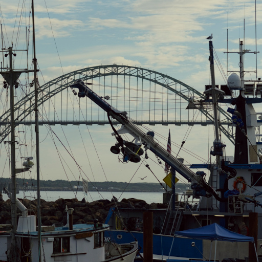
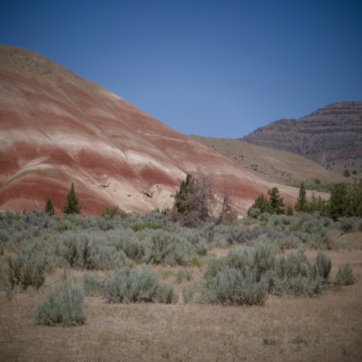
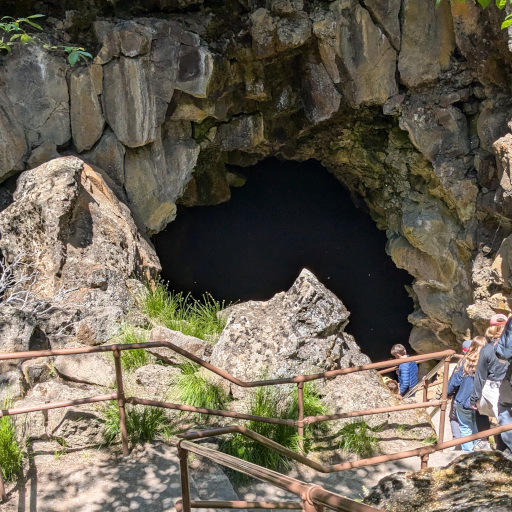
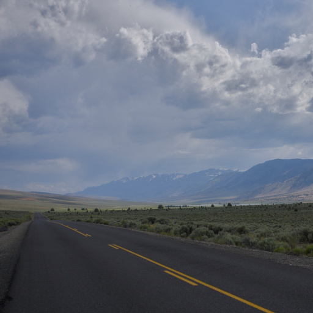
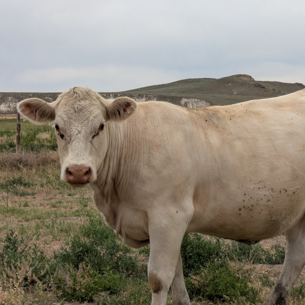
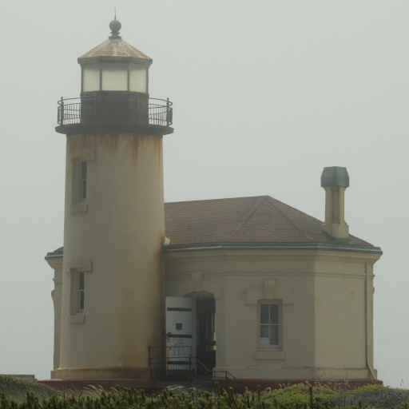
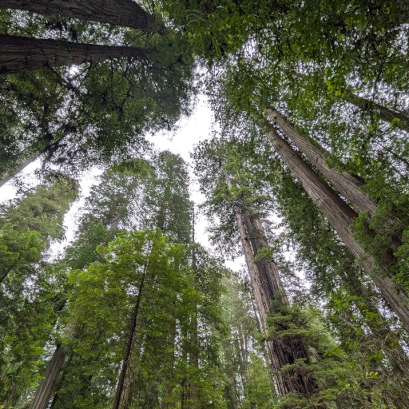
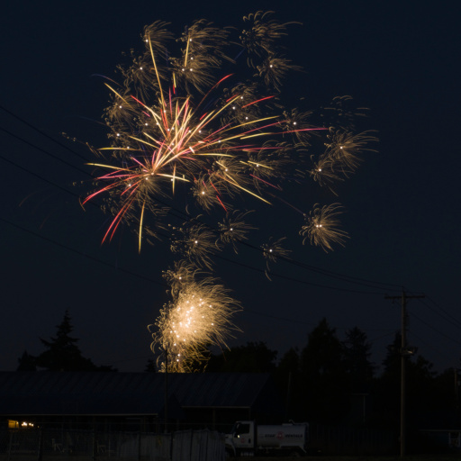

I started exploring the Pacific Northwest in Spring 2024, county-by-county, in an effort to explore all of Oregon. Very soon after I started, I invested in my first camera: a Sony Alpha 6100 with the kit lenses. After exploring some of the Willamette Valley and one trip to central Oregon, I got a telephoto lens.
Below are hyperlinks to the photo albums that I have shared. Many are from my travels across the state and the Northwest. The albums are housed on my self-hosted Docker server. If you cannot access the photo albums, it is likely because my server is turned off!







